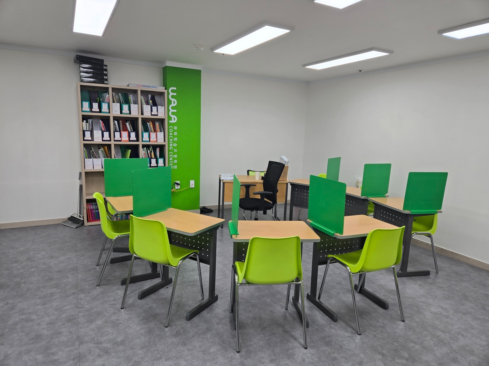
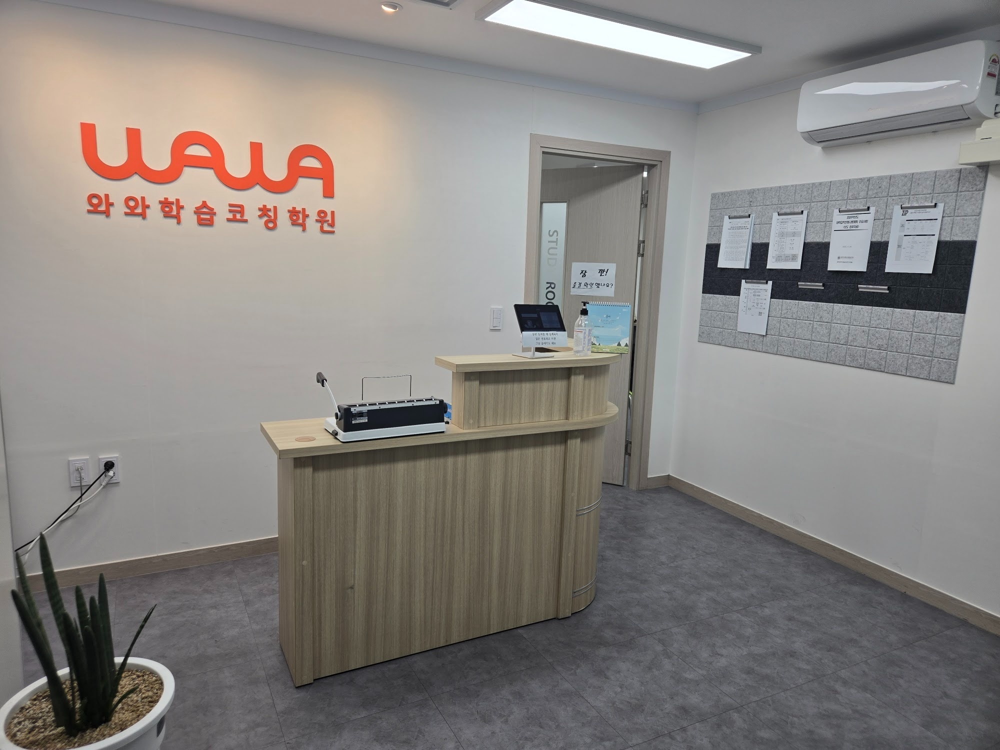
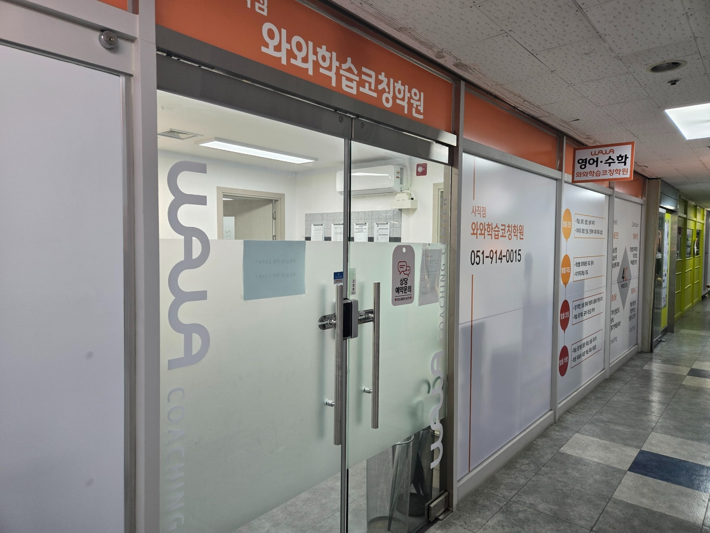

부산 동래구 사직동에 있는 사직중학교(사직중) 학부모님들께서 이맘때 가장 많이 하시는 질문이 있습니다. “2학기 기말이 아직 멀었는데 지금부터 뭘 해야 하나요?” 2학기 기말고사는 보통 12월 초에서 중순 사이에 치러집니다. 9월 말인 지금 기준으로 두 달 조금 넘게 남은 셈입니다.
두 달은 애매한 시간입니다. 지금 당장 시험공부를 시작하기에는 범위가 다 나가지도 않았고, 그렇다고 손을 놓고 있기에는 결코 짧지 않은 시간입니다. 이 글에서는 사직중학교에 다니는 아이가 남은 두 달을 학년별로 어떻게 나눠 써야 하는지, 그리고 지난 시험지를 어떻게 읽어야 다음 시험이 달라지는지를 정리해 보겠습니다.
학년별로 지금 해야 할 일이 다릅니다
같은 “기말 대비”라도 중1·중2·중3이 지금 손대야 할 곳은 완전히 다릅니다.
- 중학교 1학년 — 1학년은 시험의 형식에 익숙해지는 것이 먼저입니다. 서술형 답안을 어디까지 써야 점수를 받는지, 시험지에서 조건을 놓치면 어떻게 되는지를 한 번 겪어 봐야 합니다. 지금은 진도를 앞서 나가는 것보다 배운 단원을 시험 문제 형태로 풀어 보는 연습이 더 남습니다.
- 중학교 2학년 — 2학년 수학은 중학교 과정에서 구멍이 가장 잘 생기는 구간입니다. 일차함수·연립방정식·도형의 성질처럼 앞 단원을 딛고 올라서는 내용이 몰려 있어서, 1학년 때 대충 넘어간 부분이 여기서 한꺼번에 드러납니다. 지금 시점에서는 2학기 진도와 함께 1학기 취약 단원을 병행하는 것이 맞습니다.
- 중학교 3학년 — 3학년에게 이번 기말은 고등학교 입학 전 마지막 내신입니다. 성적 자체도 중요하지만, 이 시험이 끝나고 고등학교 입학까지의 두세 달을 어떻게 쓰느냐가 고1 첫 내신을 좌우합니다. 기말이 끝나자마자 무엇을 시작할지를 지금 미리 정해 두는 것까지가 이번 준비에 포함됩니다.
“기출 분석”은 문제를 구하는 일이 아닙니다
내신 이야기를 하면 꼭 나오는 말이 “기출 분석”입니다. 그런데 이 말을 “그 학교 시험 문제를 어디선가 구해 오는 일”로 알고 계신 분이 많습니다. 그렇지 않습니다.
먼저 분명히 말씀드릴 것이 있습니다. 학교마다 출제 범위와 문제 유형, 서술형 비중은 전부 다르고, 같은 학교라도 학년과 담당 선생님에 따라 매년 달라집니다. 그래서 저희는 특정 학교의 출제 비율이나 시험 범위를 숫자로 단정해서 말씀드리지 않습니다. 인터넷에 떠도는 “○○중은 몇 퍼센트가 서술형” 같은 이야기는 그대로 믿으실 것이 못 됩니다.
대신 가장 확실한 기출 자료는 이미 아이 가방 안에 있습니다. 지난 중간고사 시험지입니다. 그 한 장을 이렇게 읽어 보시면 됩니다.
- 어디서 나왔는지 표시해 봅니다. 문제마다 교과서·학교 프린트·문제집 중 어디서 본 것인지 적어 봅니다. 한쪽으로 몰려 있다면 다음 시험에서 무엇을 먼저 봐야 할지가 그대로 나옵니다.
- 서술형 배점을 더해 봅니다. 서술형이 몇 문항이고 배점이 총 몇 점인지 세어 봅니다. 이 숫자가 클수록 “답만 맞히는 공부”로는 점수가 안 오릅니다.
- 틀린 문제를 세 갈래로 나눕니다. 몰라서 틀린 것, 헷갈려서 틀린 것, 급해서 틀린 것. 세 가지는 해야 할 일이 전혀 다릅니다. 몰라서 틀린 것만 개념서로 돌아가면 되고, 급해서 틀린 것은 개념을 다시 봐도 소용이 없습니다.
- 다 못 푼 문항이 있었는지 확인합니다. 시간이 모자랐다면 실력 문제가 아니라 푸는 순서 문제일 수 있습니다.
이 네 가지는 학교 이름과 상관없이, 오직 내 아이의 시험지에서만 나오는 정보입니다. 남의 기출보다 훨씬 정확합니다.

영어·수학은 남은 두 달의 쓰임새가 다릅니다
수학은 단원별로 구멍을 메우는 과목입니다. 범위가 아직 다 안 나갔더라도, 이미 배운 단원에서 틀리는 자리는 지금 잡아 두어야 합니다. 시험 2주 전에는 새 단원 진도와 복습을 동시에 할 시간이 없기 때문입니다.
영어는 반대로 범위가 확정된 뒤에 폭발적으로 할 일이 늘어나는 과목입니다. 중학교 영어 내신은 교과서 본문과 학교에서 나눠 준 부교재에서 나오는 비중이 큰데, 이건 범위가 나와야 시작할 수 있습니다. 그래서 지금 두 달 동안 영어에 투자해야 할 것은 본문 암기가 아니라 단어와 문법의 기초 체력입니다. 시험 범위가 공지된 뒤에 단어부터 외우기 시작하면 본문을 볼 시간이 사라집니다.
정리하면 이렇습니다. 지금부터 시험 3~4주 전까지는 수학 취약 단원과 영어 단어·문법, 그 이후에는 수학 새 단원 문제풀이와 영어 본문·부교재. 순서를 거꾸로 하면 늘 시간이 모자랍니다.
영어학원·수학학원과 코칭의 차이
사직동 일대에도 영어와 수학을 가르치는 곳이 많습니다. 그런데 학원을 오래 다녔는데도 성적이 그대로인 아이가 꼭 있습니다. 왜 그럴까요.
과목 학원은 가르치는 곳입니다. 진도를 나가고, 설명하고, 숙제를 내줍니다. 이게 잘 맞는 아이는 그것만으로 충분합니다. 문제는 설명을 들을 때는 이해가 되는데 혼자 앉으면 안 풀리는 아이입니다. 이런 아이에게 수업을 한 시간 더 듣게 하는 것은 해결책이 아닙니다.
학습코칭이 보는 곳은 수업과 수업 사이입니다.
- 계획 — 오늘 두 시간 동안 무엇을 어디까지 할지를 아이가 스스로 적게 합니다. 적어 놓지 않으면 대부분 쉬운 것부터 손을 댑니다.
- 실행 확인 — 그 계획대로 됐는지 끝나고 함께 확인합니다. 안 됐으면 계획이 무리였는지, 집중이 안 됐는지를 나눠 봅니다.
- 남는 기록 — 틀린 문제를 언제 다시 풀지 날짜를 정해 둡니다. 그날이 되면 같은 문제를 다시 꺼냅니다.
그래서 저희는 아이에게 “몇 시간 앉아 있었니”를 묻지 않고 “오늘 계획한 것 중 몇 개를 끝냈니”를 묻습니다. 앉아 있던 시간은 성적으로 바뀌지 않지만, 끝낸 분량은 바뀝니다.
사직중학교에서 가까운 와와학습코칭 사직점
와와학습코칭 사직점은 부산 동래구 사직로 쌍용예가 아파트 상가에 있습니다. 사직동 안에 있어 사직중학교 학생들이 하교하면서 들르기 좋은 거리입니다.
사직점이 이 학교 학생을 볼 때 특별히 신경 쓰는 것이 두 가지 있습니다. 하나는 출결입니다. 들어오면 데스크 태블릿에서 먼저 출결을 남기고 학습실로 들어가도록 순서를 정해 두었습니다. 학원에 왔는지 안 왔는지를 아이 말이나 눈대중이 아니라 기록으로 남기기 위해서입니다. 다른 하나는 아이별 파일 박스입니다. 학습실 책장에 이름표가 붙은 칸이 있어서, 교재와 풀어 둔 학습지, 오답을 정리한 종이가 한곳에 쌓입니다. 시험 2주 전에 “지난번에 뭘 틀렸더라”를 찾아 헤매지 않아도 되는 이유입니다.
사직점 주변은 사직중학교·사직여자중학교에서 사직고등학교·사직여자고등학교·동인고등학교로 이어지는 학군입니다. 그래서 중학생 부모님과도 고등학교 이후 이야기를 일찍 나누게 됩니다. 지금 중학생들은 2022 개정 교육과정으로 고등학교를 다니게 되는데, 고1 수학이 공통수학1·공통수학2로 나뉘고 이후 과목명도 대수·미적분Ⅰ·확률과 통계로 바뀌었습니다. 중학교 방정식과 함수에 빈 곳이 있으면 공통수학1이 그대로 무거워집니다.
센터 모습과 하루 운영 방식은 부산 동래구 사직동 사직점 · 온 날이 기록으로 남습니다 글에 사진과 함께 정리해 두었습니다.

중학교 내신은 어디로 이어지나
중학교 내신 성적 자체는 대학 입시에 직접 반영되지 않습니다. 그런데도 중요한 이유는, 시험을 준비하는 방식이 그대로 고등학교로 넘어가기 때문입니다. 범위를 쪼개 계획을 세우고, 틀린 것을 다시 풀고, 서술형 답안을 문장으로 쓰는 습관은 고1 첫 내신에서 곧바로 표가 납니다. 그 흐름은 고등학교 내신에서 수능으로 이어지고, 학교를 다니지 않는 경우라면 검정고시를 거쳐 같은 수능으로 모입니다. 참고로 2027학년도 수능은 2026년 11월 19일에 치러집니다.
그러니 이번 기말을 “점수 몇 점”으로만 보지 않으셨으면 합니다. 두 달을 계획대로 써 본 경험이 남는다면, 그 자체가 고등학교에서 쓸 자산입니다.
부모님께서 이번 주에 해 보실 수 있는 것
- 지난 중간고사 시험지를 찾아 달라고 해 보세요. 바로 못 찾는다면, 그것부터가 정리할 거리입니다.
- 시험지에서 틀린 문제만 세어 보세요. 몇 개인지 세는 데서 그치고, 풀어 주지는 마세요. 세 갈래로 나누는 건 아이가 해야 합니다.
- 주말 하루치 계획만 같이 적어 보세요. 한 달 계획은 지키기 어렵지만 하루는 지킬 수 있습니다.
이 세 가지만 해도 남은 두 달의 출발점이 달라집니다.
※ 이 글은 중학교 내신 준비에 대한 일반적인 안내입니다. 사직중학교의 실제 출제 범위, 문제 유형, 서술형 반영 비율, 시험 일정은 학교와 학년·과목에 따라 다르고 해마다 달라지므로 이 글에서 단정하지 않았습니다. 반드시 학교에서 안내하는 학업성적관리규정과 시험 범위 공지를 기준으로 확인해 주세요. 사진은 와와학습코칭 사직점 내부를 촬영한 것으로, 사직중학교와는 관계가 없습니다.